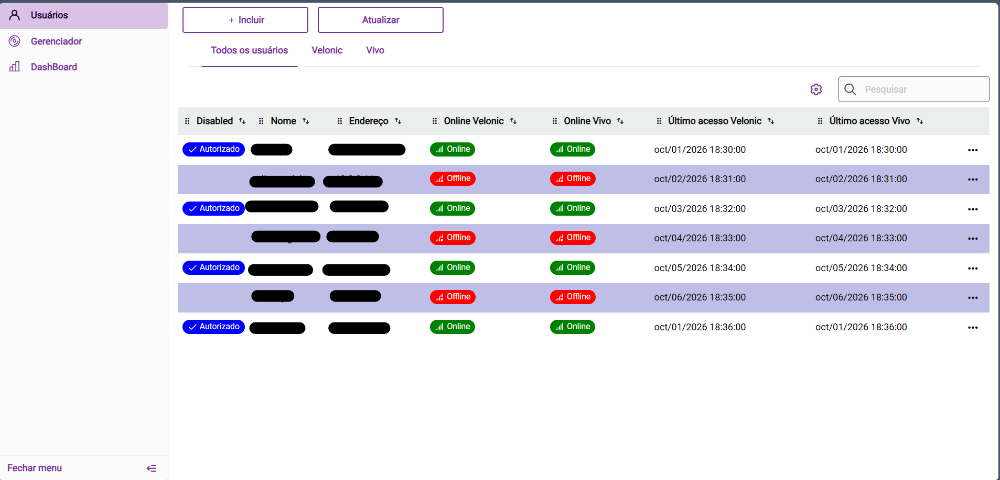
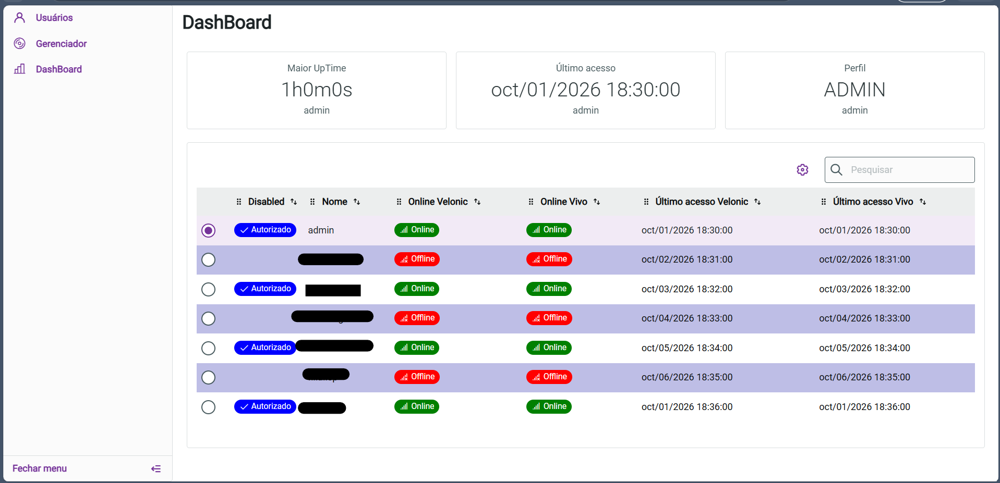
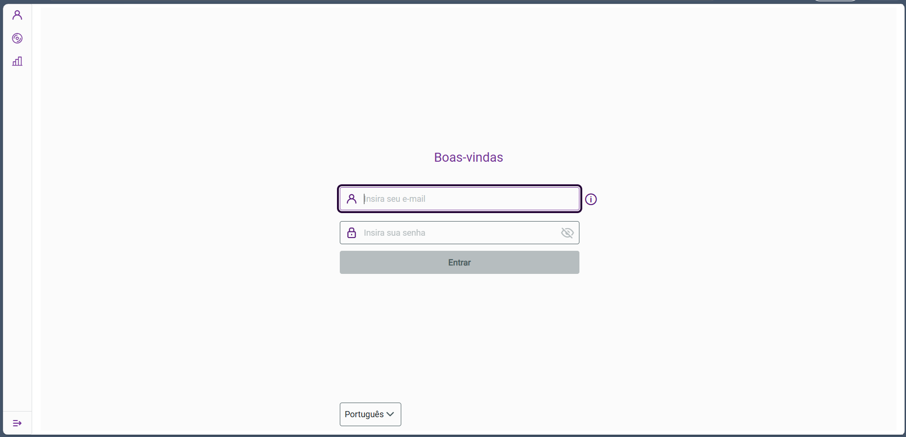

Backend
- Java
- Spring Boot
- REST APIs
- JPA / Hibernate
- JWT
Olá, eu sou
Analista de Sistemas que une a experiência em ERP TOTVS Protheus e integrações corporativas ao desenvolvimento Full Stack com Java, Spring Boot e Angular.
Atuo como Analista de Sistemas na Apply System, com foco em sustentação, parametrização e desenvolvimento de customizações no TOTVS Protheus. No dia a dia levanto requisitos com o usuário, escrevo e otimizo consultas SQL, resolvo incidentes em processos corporativos e construo integrações entre o ERP e outros sistemas, como e-commerce, workflow por e-mail e APIs REST.
Formado em Análise e Desenvolvimento de Sistemas, sigo investindo em projetos próprios com Java, Spring Boot, APIs REST, Angular e React. Gosto de entender a arquitetura por trás do que construo e de documentar as decisões tomadas pelo caminho.



Portal web para gerenciar usuários de acesso e acompanhar quem está online em duas operadoras, com abas por operadora, ações de bloquear/desbloquear e editar, cadastro de novos usuários e dashboard de uptime. Rotas restritas por perfil (ADMIN).
Ver no GitHub →Backend bancário construído do zero para aprender arquitetura na prática: pacotes por domínio, autenticação com Spring Security + JWT, migrações com Flyway e documentação das decisões de arquitetura e dos erros encontrados.
Ver no GitHub →Laboratório de serviços independentes em Spring Boot: cadastro de usuários (CRUD), sistema de pagamentos e sistema de notificações, explorando a comunicação entre serviços.
Ver no GitHub →Aplicação para duas pessoas assistirem ao mesmo conteúdo em dispositivos diferentes, de forma sincronizada. Salas com código, relógio de referência compartilhado, contagem regressiva e chat em tempo real via WebSocket (STOMP).
Sistema para abertura e acompanhamento de ordens de serviço, com front-end em React e TypeScript e API em Spring Boot.
Aplicativo Android integrado ao Firebase Firestore para persistência e sincronização de dados.
Projetos de trabalho, descritos de forma geral: sincronização de estoque entre o ERP e uma plataforma de e-commerce com jobs, fila e controle de reenvio, e fluxos de aprovação por e-mail com retorno automático ao ERP via API REST.
Vamos conversar? Me chame pelo LinkedIn ou confira meu código no GitHub.